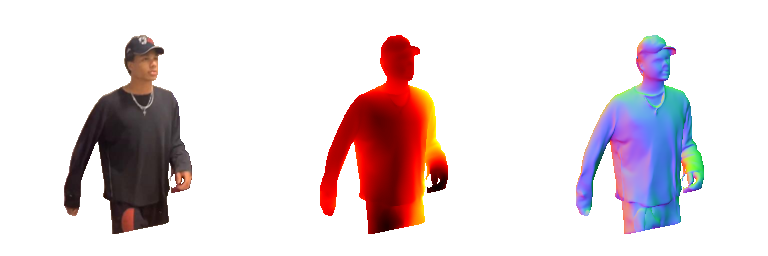

【论文阅读】HDNet
Learning High Fidelity Depths of Dressed Humans by Watching Social Media Dance Videos
项目：https://www.yasamin.page/hdnet_tiktok
github：https://github.com/yasaminjafarian/HDNet_TikTok
这篇文章提出了一个端到端的自监督网络，计算视频中人的表面法向量，来得到高保真的深度值，再进行人体重建。该算法在真实场景和渲染场景都有SOTA性能。
引入：
目前的人体三维重建缺点方法有：
（1）设备要求高，计算复杂
（2）单帧图像，数据量太少
（3）能够建整体，但细节失败
作者提出了着衣人体的高保真3D几何建图方法，使用单一视角图像来预测深度和表面法向量。
舞蹈视频的特点：
（1）单人的，包括各种姿态
（2）没有ground truth，不能使用监督方法，
（3）刚体假设，使得可以利用几何一致性来学习
作者的方法的特点：
（1）表面法向量对细节敏感，将深度曲率和表面法向量匹配
（2）端到端，输入是RGB，输出是高保真深度
（3）HDNet：学习图像和UV坐标的空间关系，来产生中间表面法向量，预测的表面法向量用来预测高保真深度
论文的贡献：
（1）制作了TikTok数据集：300个移动平台上公开媒体的舞蹈视频，包括人体掩膜和人体UV坐标
（2）提出一个扭转公式：把三维几何从一个图像扭转到另一个图像，并测量自洽性
（3）HDNet：通过加强几何一致性，来预测表面法向量反应出来的深度
作者的主要贡献在于：人体三维重建、单视图深度估计和人体三维数据集
相关工作：
人体三维重建
（1）参数模型：SCAPE、SMPL，可以从单视图重建人体，但是分辨率不高。通过残差集合来精细化参数模型。
（2）非参数模型：可以用来描述着意人体，但数据集的获取困难。
单视图深度估计
（1）引入表面法向量来精华深度细节
（2）迭代最小二乘、核回归：融合深度和表面法向量
（3）从粗糙到精细的学习方法
（4）融合表面法向量到深度估计
（5）作者的工作：表面法向量和深度一起学习
人体三维数据集：
（1）缺少用于几何预测的数据集，大部分是静态模型
（2）作者提出真实场景的舞蹈视频，来产生深度估计从不同的视角、外表、衣服风格和位姿
方法：
深度是关于像素点位置和图像的一个函数g，现有的方法直接用训练集学习这个函数，存在以下两个缺点：
（1）尽管能够获得整体的深度，但是不能获得精细的局部深度；
（2）需要大量的3d数据，但这样大量的数据集并不存在
自监督人体深度
（1）假设坐标转换函数h将人体表面坐标u映射到像素坐标x，重建三维点p，p由关于深度z、相机内参、像素坐标的函数得到。三维点p的随时间的变换，由转换函数w得到，转换包括旋转和平移。
（2）为什么w函数有效：（1）人体的部位大多数满足刚体变换（2）对于形变的部分，就扩大时间范围
（3）深度估计原本是稀疏的，通过双线性插值来获得稠密的深度
（4）最小化所有时间的所有点的实际三维位置和预测三维位置的距离和，损失函数Lw。这个让估计出的深度用来监督转换函数，所以使得转换是自监督的
表面法向量和深度的联合学习
（1）表面法向量对局部纹理、皱纹和阴影高度敏感。表面法向量垂直于三维点的切平面，是x轴和y轴单位向量的叉乘，单位向量与像素坐标和深度有关，因此又能够二者能够相互监督
（2）总损失函数为：深度误差Lz + 法向量误差Ln + 自监督法向量夹角误差Ls + 自监督三维点距离误差Lw
网络设计和细节
（1）HDNet = 表面法向量预测器 + 深度预测器
表面法向量预测器
输入：2种数据—RGB图像和前景掩膜
输出：预测的表面法向量
深度预测器
输入：3种数据—RGB图像、前景掩膜和UV坐标
输出：预测的深度
两个预测器都采用堆叠沙漏网络（ stacked hourglasses network）作为骨架
（2）孪生神经网络（Siamese network）
作用：同一视频两个不同时刻i和j的图像经过深度预测后，进行i->j的深度转换，来计算自监督三维点距离误差Lw。
（3）图像对选取方法
同一视频中，随机选取满足有5个共同的身体部位课件，且每个身体部位至少有50个UV坐标重合。
（4）使用Adam optimizer优化
数据集：
作者做的TikTok Dataset
实验：
在服务器上跑了一下，应该是tensorflow和cuda版本的问题，没跑起来。最后在colab上跑了一下demo
效果：
